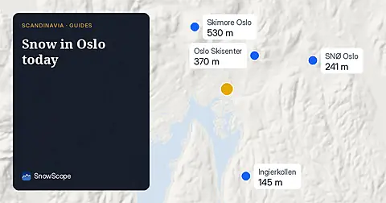

Levi in December: polar-night skiing, steady snow, EUR 57 to 60 a day
Levi's December snow has actually improved in recent decades, bucking the trend at many Alpine resorts. The past 15 winters show that every single Christmas week had at least 30 cm on the ground, compared to 87 % in the first 15 winters of our records. Plan a trip between mid-December and New Year and you have strong odds of reliable, cold, groomed snow.
See the live snow forecast for Levi in the SnowScope appSnow depth, powder alerts and the 3D map, free.
Why Levi works in December
Levi is a fell: a low, rounded Lapland hill that rises only 333 m from base to top. Because it is smooth and not very high, our 46 winters of snow history treat it as one zone. The key fact is consistency: in none of those winters was the ground bare on 15 December, and snow depth across the fell changes little with height.
This consistency comes from Lapland's geography. Far north, a warmer winter does not mean bare ground, it means wetter snow. Levi sits at 67.8°N, where even a mild December stays cold enough to build a base and keep it.


Three weeks, three odds
Early December (1-7 Dec) is a gamble: only 57 % of winters had 30 cm or more by then. The usual first day to find 30 cm is 27 November, but that varies. If you go in the first week, check conditions closely and pack patience.
Mid-December (15-21 Dec) is safer. The share of winters with 30 cm climbs to 83 %. On a typical 15 December, SnowScope shows 38 cm. In a thin year (1 in 10), expect 26 cm; in a deep year, 52 cm. That narrow range is typical for the fells: rarely do they get powder depth, rarely do they go bare.
Christmas week: the season's stronghold
Christmas week (22-28 Dec) is Levi's best week of the month. In the past 15 winters, every single one had 30 cm or more. Overall, 91 % of all 46 winters reached that mark. A typical 24 December has 43 cm on the ground.
Do not come to Levi for powder. Only 2 % of Christmas weeks have 60 cm or more. What you get instead is cold, stable, groomed snow that lasts. Last winter delivered 55 cm on 24 December.
Polar night and light
December in Levi is also the start of the polar night. By mid-December the sun barely rises, and for part of the month it does not clear the horizon at all. The light turns blue and pink for a few hours in the afternoon, and much skiing happens in twilight or darkness.
Pack a good headlamp for walks between runs, warm mittens, and face protection. The cold is dry and penetrating. For many skiers, this strange light and the quiet of the fells make Levi unforgettable in December.
How the season has changed
Levi is unusual in this series: its December snow has grown, not shrunk. In the first 15 winters (1980-81 to 1994-95), the December average was 41 cm. In the last 15 winters (2011-12 to 2025-26), it rose to 45 cm. The improvement is clearest at Christmas: 87 % of weeks had 30 cm or more in the early period; now it is 100 %.
This trend reflects how far-north mountains respond to climate change differently from the Alps. Warmer does not mean bare; it can mean wetter snow that still accumulates.
Cost and timing
A day pass costs EUR 60 at the resort gate or EUR 57 if you book online at least 14 days in advance. That rate runs from 1 December to 2 May and is one of the lowest fixed prices in this series. Nearby Ylläs charges EUR 60 normally and EUR 55.50 in low season (before 11 December), and sells a 7-day pass for EUR 254.50 in that same window.
For a short trip in mid-December or Christmas week, Levi's daily rate is competitive. For a full week in early December, Ylläs's low-season 7-day pass may be cheaper. Either way, book lifts and accommodation well ahead: December fills fast in Lapland.
Tips for skiers
- Skip the first week of December unless you like risk: only 57 % of winters have 30 cm by then. Mid-December and Christmas week are far safer bets.
- Book your accommodation and lifts early. Reserve online for EUR 57 instead of EUR 60 per day if you plan ahead.
- Bring cold-weather gear: a headlamp for the polar twilight, thick mittens, balaclava, and high-SPF sunscreen for the snow glare.
- If you venture off-piste on the fell, check the local avalanche and weather bulletin before you leave the marked runs.
- Last winter (2025-26) had 55 cm on 24 December. Even in a thin year (1 in 10), expect 26 cm on 15 December, enough for the groomed runs.
About these numbers
Resort snow depths are the deepest snow on the resort's upper slopes on the date shown; they are estimates for an area, not a measurement at one point. Forecasts can change. Always read the official avalanche bulletin before going off-piste.
Official avalanche bulletins: EAWS – European Avalanche Warning Services
Cite this report
For research, teaching or the press: the numbers and charts are free to reuse under CC BY 4.0 with this citation.
SnowScope (2026), Levi in December: polar-night skiing, steady snow, EUR 57 to 60 a day, https://snowscope.app/blog/en/2026/11/levi-december-skiing-polar-night-snow-price.html, accessed 2026-11-14
SnowScope (Atlas Labs). (2026, November 14). Levi in December: polar-night skiing, steady snow, EUR 57 to 60 a day. SnowScope snow reports. https://snowscope.app/blog/en/2026/11/levi-december-skiing-polar-night-snow-price.html
BibTeX
@misc{snowscope2026levidecemberskiingpolarn,
author = {{SnowScope (Atlas Labs)}},
title = {Levi in December: polar-night skiing, steady snow, EUR 57 to 60 a day},
year = {2026},
month = nov,
howpublished = {\url{https://snowscope.app/blog/en/2026/11/levi-december-skiing-polar-night-snow-price.html}},
note = {Published 2026-11-14 13:29 UTC; accessed 2026-11-14}
}· CC BY 4.0 · Methods, data and tools →
Levi: snow and temperature by height, this winter vs last (tools) →
Follow Levi
Free: a message when fresh snow is coming, and the forecast every morning.
More snow reports

Oulu's first snow cover of winter arrived on 13 November: 7 cm at the city station, above the usual 2 cm for this date. Forecast: 2–3 cm more by Saturday.

Jämtland's first solid snow cover arrived this week: 19 to 33 cm measured at stations around Storsjön on 13 November. No thaw expected.

Measured snow depth in Oslo on 13 November 2026: 4 cm at Blindern, 31 cm at Bjørnholt and 37 cm at Tryvannshøgda. What a normal mid-November looks like, and what the weekend does to it.